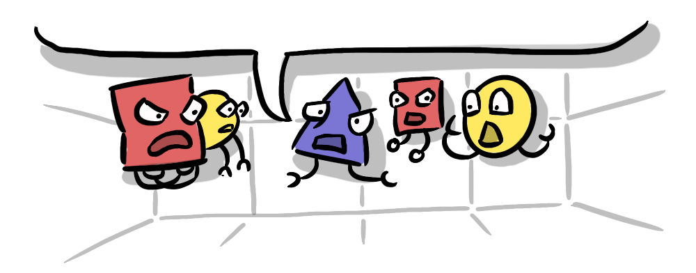

In Vincenzo Natali's 1997 cult indie classic film "Cube" a group of disconnected individuals awake alone in a labyrinth of identical interlocking rooms. Throughout the film they must find each other and work together to survive a ghastly array of fatal traps and puzzle their way out. Each character seems to have a purpose; a doctor, a police officer, an escape artist, a maths wiz and we see them coordinate their unique skills to outwit the sadistic mastermind behind...
It's a film about our human capacity for cooperation, the benefits and the difficulties, but the genius of the film—the evil genius—spoiler alert: is that the villain is also human cooperation. We find out that Worth; a character whose worth to the group appears to be to make unhelpful jaded jibes at every turn, turns out to be an engineer responsible for designing a component of the Cube, with no idea what the whole was.
I never even left my office, I talked on the phone to some people, specialists, other guys like me, working on small details, no one knew what it was...

The Cube turns out to be an invention of no one in particular, but rather the product of the siloed alignment between specialists just following orders. The project gets completed because that's what projects must do, the product gets used because that's what products must do.
This may be hard for you to understand, but there's no conspiracy, nobody is in charge. It's a headless blunder operating under the illusion of a master plan.
In a previous post, The Era of the Dividual, I used this archaic term to refer to entities that can be seen to function in the world through individuals, but independently of them. The first is Milton's conception of proscribed religion, where a religious person must adhere to dogma imposed from the outside, rather than from an internal sense of what is true. Another example was social media algorithms, that dictate viral success independent from the star-power of an individual, and then finally we looked at the presidency of Donald Trump as an example of an individual entity with so little integrity or consistency, that he is able to politically shape-shift.
In "Cube" the dividual is the "headless blunder" born of the cooperative actions of individuals, without any overall design or "conspiracy", there is no individual mastermind. This comes as a result of a very particular type of siloed alignment, where, because individual specialists are kept separate from each other and importantly from "the head", they end up complicit in creating a product no one wants.
The idea of self-interested individuals being complicit in their collective destruction might sound familiar to some readers, because it's the exact description of a character we've dealt with here on the blog, the antagonist, humanity's nemesis, the god of negative sum games...
A perfect example of a "dividual" is Moloch, an entity that exists outside any one individual, but is so clearly identifiable by its behaviour, that it seems to have its own motivations and personality—the cube is a perfect manifestation of Moloch.
We increasingly exist in a system where we are contributing at all times to work projects, markets, information eco-systems, financial systems and political systems with increasing anonymity, and decreasing exposure to direct feedback. The accountability that is inherent in face-to-face interactions is dissolving as we become dividual.
The result is that we are complicit in everything from environmental degradation to modern slavery, a point made well in The Good Place where Ted Danson's character explains that the "points system" for getting into "The Good Place" no longer works, because the world is simply too interconnected, it is impossible not to be a small part of many globally significant crimes with every minor choice we make.

But at the same time, our involvement is so diffuse that no one could reasonably point at any one person and say "you're responsible for this." and so great evils are able to continue.
I learned of this dynamic playing out in a deliberate way when I visited the Nazi work camp Sachsenhausen. On this dark tour, we were guided by a young Masters student studying German history. He took us to Station Z, and explained how the victim would go through a series of stages, involving different officers before execution. Each officer had a specific role; checking identification, weighing and health checks, in some cases photography. The conceit of these checks was to disguise the execution as a fitness assessment to prevent resistance, but it served the dual purpose of distributing (and therefore diluting) the sense of responsibility for the execution. Eventually it was one officer's job to align the victim's head with a hole in the wall, and stand aside, the final trigger was pulled by an SS officer in another room who could not see and did not know anything about the victim they were shooting through the hole.
The whole process was intended to create the "banality" in what Hannah Arendt famously termed "the banality of evil".
I give this example because I think it's important to recognise the lengths the Nazi leadership had to go through to other victims in order to bypass human instincts. Siloed alignment gives us great power without requisite accountability. It makes me question what systems we have at present that utilise similar mechanisms, whether designed intentionally, like with the Nazis, or blundered into like in "Cube".
This othering of the victim is still the end result of this particular type of siloed alignment. The accidental and designed mechanisms for siloing cooperators from each other that we've discussed, contribute to a wider siloing of a strongly aligned group; "the cooperators" against another group; "the other".
A glaring example personally is factory farming—and my own complicity in it. I am not a vegan, or even a vegetarian, and while I endeavour to buy free-range meat and eggs, I am not as vigilant as I could be. The meat industry, by design and by an accident of the division of labour, involves a vast cooperative network of largely siloed stages, from factories, which have their own Station Z-like processes for eliminating resistance from livestock and staff, to packaging, to marketing, to distribution. The process of eating meat is very much divorced, by the time it reaches the consumer, from the process of killing and preparing the meat.
The process of siloed alignment undergone makes eating the meat infinitely more (morally) palatable for the consumer, because the animal being killed has been successfully othered.
We are perhaps all unwittingly horsemen in the gathering apocalypse—how do we get ourselves out of this mess? There are so many factors at play, how do we deal with them all at once? Next up we will return to the idea of coordination problems, with the biggest coordination problem of all: The Meta-crisis.
Subscribe below to be updated when the next post in the series is released